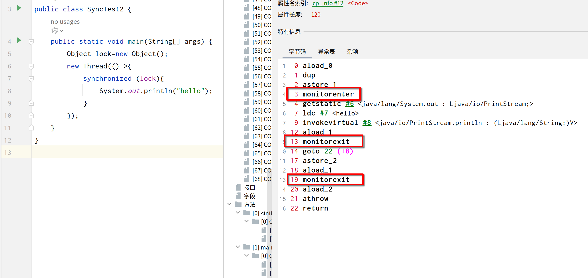
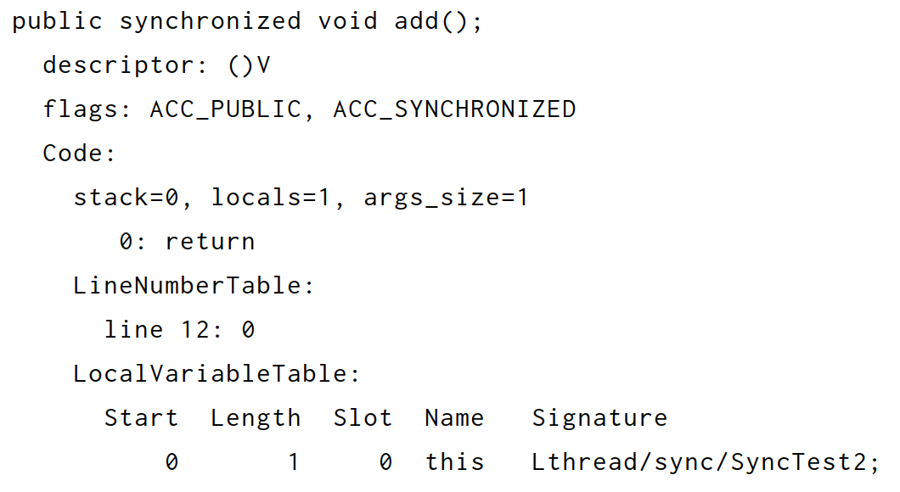
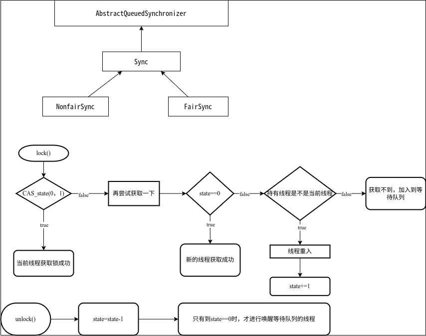

基础概念
进程/线程
cpu:
- 中央处理器
- 是一个特殊的处理器，负责解析和执行计算机程序的指令
- 架构：
- SMP：对称多处理器，多个cpu相同对待，共享内存、总线
- AMP：异步多处理器，每个cpu有自己的内存、总线资源，通信采用共享内存
多核：
- 将cpu划分为多个core，形成一个个独立单元，可以独立执行任务
- 所以并行执行进程/线程是可以的
- intel 4核8线程：这个8线程是指超线程，将每个核心划分两个逻辑核心，防止资源的浪费，4核就是cpu具体的核心数了。
内核：
- 是指在一个cpu处理器中，划分出来的一部分，主要功能和其他部分不同
- 它负责管理软件部件（进程）
虚拟内存：
- 它是假的“内存”，让程序认为他自己所占用的内存空间是连续的，实际上是有可能不连续的。
- 它和物理内存的映射关系，将采用页表的形式记录下来，还有快表这个缓存。
- 它通过文件的形式记录程序的数据和地址，在所需要的数据不再内存中时，才加载到物理内存中。
进程
- 用来支撑程序运行的东西，用来分配和管理程序所要使用的资源，当然也是计算机分配资源的基本单位
- 由操作系统进行管理
进程
线程
- 是更小的单位了，在进程运行时可以产生多个线程，每个线程可以处理自己的资源，并且还会共享进程的内存空间和资源量。
- CPU进行使用的基本单位
用户线程/内核线程
- 用户线程：由用户空间程序管理的线程，创建和切换成本低，不可以利用多核
- 内核线程：由内核管理的线程，创建和切换成本高，可以利用多核
线程模型
用户线程和内核线程之间的关联方式、调度方式，用户线程的创建、操作都会映射到内核线程上，处理多线程的并发执行
- 一对一：一个内核线程对应一个用户线程
- 一对多：一个内核线程对应多个用户线程
- 多对多：多个内核线程对应多个用户线程
为什么会有呢？
- 时间片切换：在资源方面，出现竞争关系，将采用时间片切换算法，将每一个进程分配一定的时间，比如50ms，时间一到，将保存该进程运行的状态，如内存里的值、寄存器状态，这些关于自己的状态，被称为
上下文。这些操作需要大量的时间，进程的消费比较大，进程有自己的虚拟地址空间，然而线程就可以共享进程的空间，在切换时消耗小。- 虚拟内存：进程在运行初，会申请内存；虚拟内存和物理内存存在映射，也就是页表，切换时需要保存页表，还有其他的快表（TLB、缓存），切换会被清空
- 任务并发：在一个程序运行时，当有多个独立任务时，采用多个线程可以快速的完成，再加上会共享进程的内存空间，而且线程不会切换上下文，很快。
并发/并行？
并发（Concurrent）：
- 是指在一个时间段内，多个线程争抢一个cpu资源，然后无法并行操作，cpu只能进行时间片切换，会出现线程的挂起等操作，这中现象就是并发。
并行（Parallel）：
- 是指在某一时刻（同时），多个任务一起执行
- 在cpu的核心数足够的时候，多个进程可以很好的运行在多个核心上，不出现竞争关系，这称为并行。
Java层面
多线程
为什么要有多线程？
- 一个线程处理任务慢，采用多个线程利用多个核心运行，在不出现竞争资源的时候，执行速度杠杠的。
带来的问题：
- 共享进程的内存空间，若是出现竞争资源的关系，需要额外的处理
- 死锁问题：两个线程都“吃着碗里，看着锅里”
- 内存泄漏：线程创建的对象没有释放
在单核cpu运行多线程呢？
- 这要取决与线程的任务类型，比如cpu密集型，它所消费cpu是比较久的，这时候要采用多线程效率就低了。
- 还有IO密集型，线程的任务主要是完成IO操作，所以线程可以利用完成IO的时间，利用cpu
线程状态
线程由进程创建后，会有一定的生命周期，在java中，有以下状态：
NEW：新建状态，是new了之后，没有后续动作的时候RUNNABLE：运行状态，是start后，正在运行的时候BLOCKED：阻塞状态，被动的阻塞了，比如竞争资源失败了WAITING：等待状态，调用了wait/join之后的状态，这时候必须需要别的线程来呼叫，叫醒这个线程，然后进入运行状态。TIME_WAITING：超时等待状态，调用了sleep之后的状态，需要别人来叫醒，或者自然醒。TERMINATED：死亡状态，终止状态，run方法结束之后的状态。

阻塞和等待
阻塞状态：
- 这是线程去竞争临界区的锁失败后的状态
- 之后，还可以去竞争，继续运行
等待状态：
- 这是线程主动等待，释放锁，也就代表释放占用的资源了。
- 这都是获取到锁之后，才能去操作的。
线程死锁
死锁：
- 多个线程都处于阻塞状态，程序无法停止；如多个线程都在竞争某些资源，但是这些资源都被互相占用着，都不释放，所以线程都处于阻塞状态。
条件：
- 互斥条件：针对资源，一个资源任意时刻只有一个线程占有
- 请求与保持条件：针对线程，一个线程因请求资源而阻塞时，对已获得的资源保持不放
- 不剥夺条件：针对资源，线程在占有资源的时候，不允许其他线程占有
- 循环等待条件：针对线程，多个线程按照顺序申请资源，前一个不释放，后一个也就不能占有
创建和使用线程
Runnable
- 接口，是一个功能性接口
- 可以自定义一个类实现接口，然后重写run方法，传入一个Thread构造器中，然后调用start方法，达到创建线程，执行任务的功能
public interface Runnable{
void run();
}Thread
- 这个是java中创建和使用线程的类
- 它实现了Runnable接口
start()和run()
- start才是线程开启工作的方法，它最后调用的是一个native方法
- run方法只是线程启动后，具体的工作内容，它是由java虚拟机来调用
使用
- 类中有很多构造器，有一个Runnable参数的构造器
- 如果创建对象不传参数，类中的target（runnable）是null
- 传参，就调用参数的run方法
- Thread类中的run方法默认调用的是类中成员target（runnable）的方法
- 所以，要重写run方法
- 新建一个类，实现接口，重写方法
- 继承Thread类，重写方法
- 使用匿名类，重写方法
public class Thread implements Runnable {
Runnable target;
public Thread(){
this.target=null;
}
public void run(){
if (target != null) {
target.run();
}
}
public synchronized void start() {
start0();
}
private native void start0();
}wait()
- 这是Object类中的方法，它的作用是让当前线程进入等待状态，当前线程会被置于这个对象的等待集合中，线程调度时会被禁用。
- 该方法只能由此
对象的监视器进行调用，否则会抛出IllegalMonitorStateException异常 - 如果当前线程在等待之前或在等待时被任何线程中断，则会抛出
InterruptedException异常 - 它应该被用在同步代码块/同步方法中，这也就说明wait方法是获取了锁之后才会调用的
- wait(0)是永久等待，wait(10)是等待10毫秒也就是放弃10秒对象的同步权
线程苏醒的时机：
- 其他线程调用对象的notify方法并且等待的线程恰好是要唤醒的线程(notify是随机的)
- 其他线程调用对象的notifyAll方法
- 其他线程中断等待的线程，出现异常
- 指定的时间到了
苏醒之后，是将对象的等待集合中删除该线程，然后，该线程重新竞争对象的同步权
使用：
- 线程竞争资源，争锁，竞争成功这执行锁块的代码，竞争失败进入对象监视器的等待队列
- 竞争成功后可以调用wait方法（可能是因为这功能需要其他的条件才能执行，条件不符合的时候主动等待一下，等待条件符合）
- 其他线程也会竞争资源，但是总会有符合条件，执行功能代码的线程，所以此时成功执行功能代码的线程就可以唤醒某一个线程，但是注意，此时有可能会唤醒多个等待线程（比如notifyAll方法，或者循环几次调用notify方法……）
- 被唤醒的线程会重新竞争资源，但还是会有新线程会竞争资源
- 最终，竞争成功的线程会根据程序计数器记录的位置继续执行代码块
- 但是存在以下问题：
虚假唤醒- 线程可以在没有通知、中断或超时的情况下被唤醒，这就是所谓的
虚假唤醒 - 这时候被唤醒，就会去执行功能代码块，但是条件没有通过其他线程正确的修改，所以就会有问题
- 所以采用
循环的方式，将wait放在循环里面，以免这种情况
- 线程可以在没有通知、中断或超时的情况下被唤醒，这就是所谓的
- 所以最终线程执行功能代码，不仅取决于竞争锁成功（也就是获得cpu使用权），而且也要符合某个执行条件
String a="12";
Thread t=new Thread(new Runnable() {
public void run() {
synchronized (a){
System.out.println(this);
while(!locked){
try {
a.wait();
} catch (InterruptedException e) {
throw new RuntimeException(e);
}
}
}
}
});
t.start();notify()/notifyAll()
- 属于Object类的方法，即每个类都有这个方法
- 作用是将对象的
监视器的等待队列的线程移除，恢复其重新竞争的状态。 - 注意，和wait方法一样，调用对象的这两个方法，必须要有这个对象的监视器的所有权
sleep()
- 使当前线程
暂时停止执行，在指定的时间之后恢复继续运行 - 注意，它不会使线程失去认识监视器的所有权
- Thread 类的静态本地方法
join()
- 这个是属于线程的方法，当前线程可以调用另一个线程的join方法，使它进入等待状态，
- 具体的方式是
- 应用在
线程对象的wait方法，比如A、B两个线程，B线程调用A.join() - 此时B线程只有等到A线程死亡之后，才会退出循环继续执行代码
- 应用在
public final synchronized void join(long millis)
throws InterruptedException {
long base = System.currentTimeMillis();
long now = 0;
if (millis == 0) {
while (isAlive()) {
wait(0);
}
} else {
while (isAlive()) {
long delay = millis - now;
if (delay <= 0) {
break;
}
wait(delay);
now = System.currentTimeMillis() - base;
}
}
}- isAlive是native方法，用于检查线程是否存活
并发编程的特性
问题
主要问题就是多个线程去竞争一个共享资源的时候，会出现混乱，比如一个线程修改了这个资源，另一个线程也去修改了这个资源，在回写保存的时候，其中一个线程修改的操作会被覆盖掉。
这个时候，就要考虑线程之间的同步性了。回忆一下操作系统的信号量机制，信号量是一个抽象的数据类型，通常包括一个整型数和一个等待队列，利用PV操作，请求资源、释放资源，常见的有整型信号量、记录型信号量，利用信号量(mutex)的值，来决定该线程是否能获得这个共享资源，获得不了就阻塞加入到等待队列，其他线程释放资源的时候，就从等待队列中释放相应数量的阻塞线程。
注意哦，对象的监视器就类似操作系统的那个记录型信号量机制，一个整型数、一个等待队列（对应的对象的等待队列）
原子性
- 确保一系列操作要么全部完成，要么完全不执行。这意味着在执行过程中，不会被其他线程打断
可见性
- 当一个线程修改了共享变量的值时，其他线程能够立即看到这个修改。这保证了数据的一致性和同步性。
有序性
- 程序的执行顺序应该按照代码编写的先后顺序来执行，即使在并发环境下也应如此。这样可以保证程序的正确性和预期的行为。
悲观锁和乐观锁
悲观锁：
- 假设所有的情况都是最糟糕的，所以在每个线程竞争资源的时候都会上锁，竞争失败的话就阻塞，加入到等待队列，唤醒的时候，进行线程切换。
- 适用于数据冲突频繁的场景
- 如synchronized、ReentrantLock都是悲观锁
乐观锁：
- 假设当前的资源没有任何问题，继续操作，在更新数据的时候进行检查对错与否
- 适用于数据冲突少的场景
- 比如CAS操作
synchronized
这是java的关键字之一，通常用来维护一个同步代码块，可以应用在方法上、对象上。 synchronized 方法或语句的使用提供了对与每个对象相关的隐式监视器锁的访问，但却强制所有锁获取和释放均要出现在一个块结构中：当获取了多个锁时，它们必须以相反的顺序释放，且必须在与所有锁被获取时相同的词法范围内释放所有锁
使用
修饰静态方法
public class SyncTest1 {
private static int sum = 0;
private synchronized static void add(){
SyncTest1.sum++;
}
public static void main(String[] args) throws InterruptedException {
int nums = 10;
Thread[] ts = new Thread[nums];
for (int i = 0; i < nums; i++) {
ts[i] = new Thread(() -> {
for (int j = 0; j < 1000; j++) {
SyncTest1.add();
}
});
ts[i].start();
}
for (Thread thread : ts) {
thread.join();
}
System.out.println("SyncTest num: " + SyncTest1.sum);
}
}- 通过关键字sync修饰SyncTest1类中的静态add方法，每个线程必须获得该类的Class对象的锁，才能够去执行方法，可以保证操作的正确。
修饰实例方法
class Share{
private int num=0;
public synchronized void add(int a){
num+=a;
}
public int getNum(){
return num;
}
}
/**
* 测试同步
*/
public class SyncTest1 {
private static int sum = 0;
public static void main(String[] args) throws InterruptedException {
int nums = 10;
Thread[] ts = new Thread[nums];
Share share=new Share();
for (int i = 0; i < nums; i++) {
ts[i] = new Thread(() -> {
for (int j = 0; j < 1000; j++) {
share.add(1);
}
});
ts[i].start();
}
for (Thread thread : ts) {
thread.join();
}
System.out.println("share num: " + share.getNum());
}
}- 通过关键字sync修饰Share类中的add方法，每个线程必须获得对象实例share的锁，才能够去执行方法，可以保证操作的正确。
修饰代码块
public class SyncTest1 {
private static int sum = 0;
public static void main(String[] args) throws InterruptedException {
int nums = 10;
Thread[] ts = new Thread[nums];
Object object=new Object();
for (int i = 0; i < nums; i++) {
ts[i] = new Thread(() -> {
for (int j = 0; j < 1000; j++) {
synchronized (object) {
sum++;
}
}
});
ts[i].start();
}
for (Thread thread : ts) {
thread.join();
}
System.out.println("Sum: " + sum);
}
}- 通过使用关键字sync修饰object对象，使每个线程都需要获得object对象的锁才能进行代码的操作，就可以保证sum变量的正确操作。
区别
- 修饰静态方法，锁住的是当前类的
Class对象（加载到内存时，创建的class对象），因为静态方法、静态变量都属于类，所以每个线程要执行/获取类的信息，必须要获得类对象的锁 - 修饰实例方法，锁住的是当前
实例对象，实例方法需要对象来执行 - 修饰代码块
- synchronized(obj)：锁住的是
对象实例 - synchronized(Share.class)：锁住的是
类对象
- synchronized(obj)：锁住的是
注意：
- 首先要注意的是
对象实例的锁和类对象的锁不互斥，两个对象不一样，锁就不一样，在方法内调用是可以的。
原理
修饰代码块的字节码情况：

有一个monitorenter，两个monitorexit，因为，sync最终使用的还是获得对象的监视器的权力(Monitor)
修饰方法的字节码情况：

它没有monitorenter和monitorexit，取而代之的是一个flags标志 ACC_SYNCHRONIZED
Lock
也是锁的概念，比关键字synchronized提供了更广泛的功能。锁是多个线程对共享资源访问的工具，锁提供了对共享资源的独占访问。
可以按照灵活的访问对共享资源进行同步控制
public interface Lock {
//获取锁，如果锁不可用，则当前线程变为等待状态
void lock();
//获取锁，如果锁不可用，则当前线程进入等待状态，并且能够响应中断。
void lockInterruptibly() throws InterruptedException;
//尝试获取锁，如果锁可用则获取并返回true，否则返回false。
boolean tryLock();
//尝试获取锁，如果在给定的时间内锁变得可用，则获取锁并返回true，否则返回false。
boolean tryLock(long time, TimeUnit unit) throws InterruptedException;
//释放锁
void unlock();
//创建一个新的Condition并且绑定到这个Lock对象上
Condition newCondition();
}ReentrantLock
- 对于线程来说，是一个可重入锁，这把锁将由
最近成功获得锁，并且还没有释放该锁的线程所拥有。当锁没有被另一个线程所拥有时，调用 lock 的线程将成功获取该锁并返回。如果当前线程已经拥有该锁，此方法将立即返回，这就是可重入锁的概念 - 还支持一个公平的概念，若创建时设为true，则空闲锁将由等待时间最长的线程持有（synchronized在对象的等待队列中，每次notify是随机的）
public class Main{
public ReentrantLock lock =new ReentrantLock();
public void test(){
lock.lock();
try{
//method body
}catch(Exception e){
}finally{
lock.unlock();
}
}
}
流程
- 分为公平和非公平两种模式（讨论非公平，默认的）
- 当执行lock()时，进行上锁，利用CAS操作，将state从0设为1，成功的话就state的拥有者就设为当前线程
- 如果将state从0设为1不成功，再试着获取一下锁，进行下一步
- 重入的情况：state肯定是大于0的并且当前线程是持有线程的时候，这时候只要增加state的数值即可，返回true。
- 竞争失败的情况：state不为0且当前线程不是持有线程，直接返回flase
- 后续将竞争失败的线程作为一个Node，添加到队列中
- 释放锁时，要注意，加锁多少次就要释放多少次，不然state回归不到0值，其他的线程会一直加锁不成功
state从0设为1失败：
final boolean nonfairTryAcquire(int acquires) {
final Thread current = Thread.currentThread();
int c = getState();
if (c == 0) {
//没有线程了
if (compareAndSetState(0, acquires)) {
setExclusiveOwnerThread(current);
return true;
}
}
else if (current == getExclusiveOwnerThread()) {
int nextc = c + acquires;
if (nextc < 0) // overflow
throw new Error("Maximum lock count exceeded");
setState(nextc);
return true;
}
return false;
}释放锁的例子：
- 此时第一个线程加锁两次，之后state为2
- 但是释放锁就一次，所以state为1
- 第二个线程加锁就会失败，造成死锁问题，程序不会停止，因为线程会一直等待
//源代码
protected final boolean tryRelease(int releases) {
int c = getState() - releases;
if (Thread.currentThread() != getExclusiveOwnerThread())
throw new IllegalMonitorStateException();
boolean free = false;
if (c == 0) {
free = true;
setExclusiveOwnerThread(null);
}
setState(c);
return free;
}public class SyncTest2 {
public static ReentrantLock lock=new ReentrantLock();
public static void main(String[] args) {
new Thread(()->{
lock.lock();
lock.lock();
try {
System.out.println("1");
}finally {
lock.unlock();
}
}).start();
new Thread(()->{
lock.lock();
try {
System.out.println("2");
}finally {
lock.unlock();
}
}).start();
}
}代码：
- 方法的执行由抽象静态内部类
Sync来执行（存在的理由是由于公平/不公平的原因） - 最后锁的控制操作是由AQS来实现的
ReadWriteLock
读写锁
- 读取锁：如果只是读取共享资源的操作，那么就没有并发问题，可以让多个线程并发访问
- 写入锁：该锁还是让同一时刻只有一个线程去访问共享资源
public interface ReadWriteLock {
Lock readLock();
Lock writeLock();
}ReentrantReadWriteLock
- 支持可重入的读写锁
- 也支持公平和不公平
- 支持锁的降级，从写入锁降级到读取锁
对象监视器（Monitor）
对象的监视器是一种同步机制。在java中，基于操作系统的互斥信号量（mutex），一个监视器对应一个对象，负责多个线程对这个对象的访问。 所以，在synchronized使用时，一个monitorenter可以看作成是P操作，一个monitorexit可以看作成V操作，通过操作监视器的值，保护这个对象的同步访问。